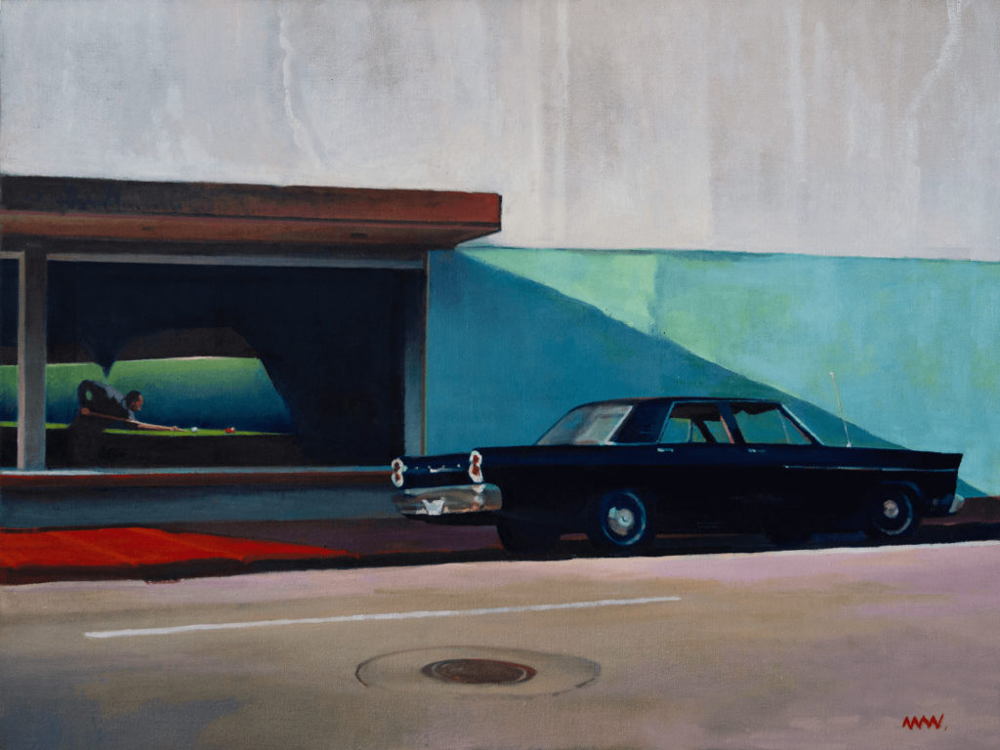

Ha inspirado a cineastas...
Arriba vemos el trailer de Shirley, una película documental inspirada en trece obras de Hopper.

A la izquierda abajo, un fotograma de "Psicósis" (Hitchcock, 1960) y, encima, la obra de Ed Hopper "Casa al lado de la vía", de 1925.
Arriba vemos un frame de la inolvidable "Paris, Texas" (Wim Wender, 1984)
Y a otros grandes pintores...
Debajo vemos "After the Gig", "Q-Train", "What I Did You When You Left" y "Without Even Looking", todas ellas obras de Nigel Van Wieck, el llamado Hopper
del siglo XXI.
